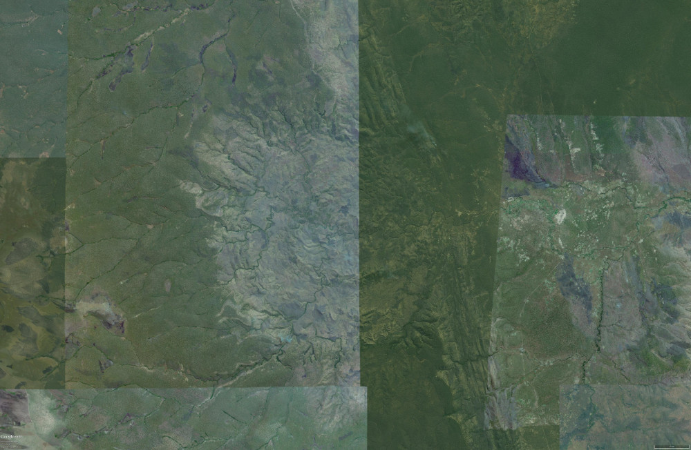
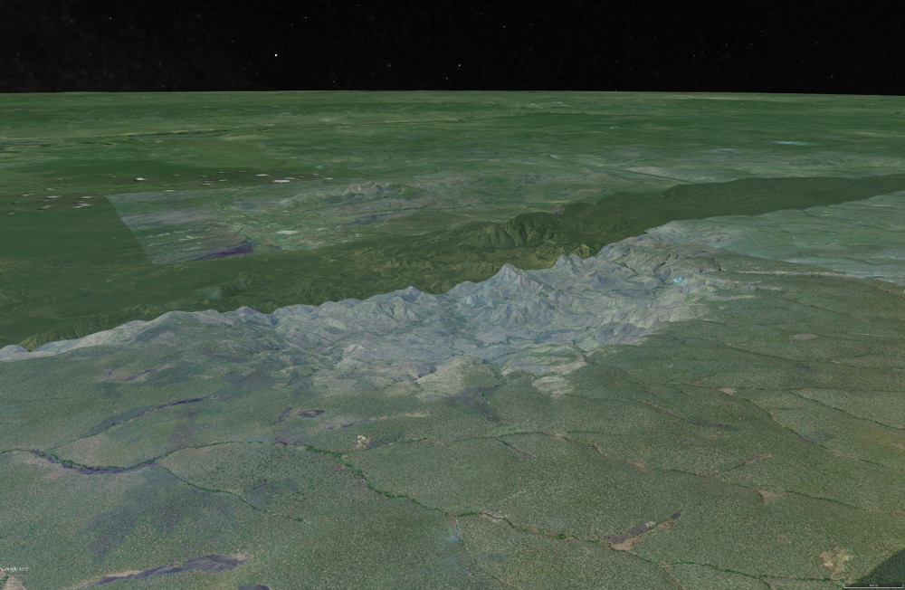

| Crater Name(s) | Luizi |
| Country | Democratic Republic of the Congo |
| Longitude | 28 deg 00 min E |
| Latitude | 10 deg 10 min South |
| Diameter (km) | 17 km |
| Age | <573 Ma |
| Impact Origin Evidence | Shatter Cones and PDF |
| Description | The Luizi structure has an elevated outer rim surrounding a moderate to steeply dipping sediments with shatter cones and dykes of monomict lithic breccia. |
| References | Reimold W U and Koebert C. 2014. Impact Structures in Africa: A Review. Journal of African Earth Sciences, vol. 93, p. 57-175. |
| Date Data Entered | 2014 09 25 |
Landsat 8 pansharpened RGB (Bands 4, 3 and 2 - Path 173, Row 67) image of the Luizi impact structure. Map coordinates WGS 84 zone 35 south.
Vertical Google Earth image of the Luizi impact structure.
Oblique Google Earth image looking to the south east across the Luizi impact structure.